第 9 章 频域分析
布莱克先生提出了一种负反馈中继器，并通过实验表明，它确实具有他预言的优点。特别是，它的增益在很高程度上保持恒定，而且线性足够好，使各通道相互作用产生的杂散信号可以限制在允许范围内。为了获得最佳结果，反馈因子 \(\mu\beta\) 的数值必须远大于 1。反馈因子大于 1 时仍有可能稳定，这一点曾令人困惑。
本章研究如何通过考察不同频率的正弦信号在反馈回路中的传播，来判断闭环系统的稳定性和鲁棒性。这个方法使我们能够根据开环传递函数的频域性质推断闭环行为。奈奎斯特稳定性定理是其中的关键结果，它既提供了稳定性分析方法，也引入了衡量稳定程度的若干指标。
9.1 环路传递函数
用反馈连接起来的系统，其稳定性有时并不好判断，因为每个系统都会影响另一个系统，思考时很容易形成循环。奈奎斯特在本章开头引文中提到的现象正说明，反馈系统的行为常常会让人感到困惑。不过，传递函数提供了一个优雅的数学框架，可以清楚地讨论这类系统。我们把这种方法称为环路分析。
环路分析的基本思想是追踪一个正弦信号在反馈回路中怎样传播，并观察传播后的信号是增大还是衰减。对线性动态系统而言，这很容易完成，因为正弦信号通过系统后的变化由系统的频率响应刻画。关键结果是奈奎斯特稳定性定理，它让我们对系统稳定性有更深入的理解。与第 4 章中通过 Lyapunov 函数证明稳定性不同，奈奎斯特判据不仅告诉我们系统稳定还是不稳定，还通过稳定裕度定义了稳定程度。奈奎斯特定理还暗示了应该如何修改一个不稳定系统使其稳定。第 10 到第 12 章会详细讨论这些设计方法。
考虑图 9.1a 中的系统。判断闭环系统是否稳定的传统方法，是检查闭环特征多项式的所有根是否都位于左半平面。如果过程和控制器具有有理传递函数
那么闭环系统的传递函数为
特征多项式为
检查稳定性时，只要计算特征多项式的根，并验证每个根的实部都为负即可。这个方法直接，但对设计帮助不大，因为它并不容易告诉我们应当怎样修改控制器，使不稳定系统变成稳定系统。
奈奎斯特的想法是研究反馈回路中出现振荡的条件。为此，引入环路传递函数
也就是图 9.1b 所示，在反馈回路中断开以后得到的传递函数。环路传递函数可以看作从位置 A 的输入到位置 B 的输出的传递函数，并乘以 \(-1\)，以符合负反馈的通常符号约定。
先看回路中何时能够维持周期振荡。假设在 A 点注入频率为 \(\omega_0\) 的正弦信号。稳态下，B 点的信号也会是频率为 \(\omega_0\) 的正弦信号。如果 B 点信号与注入信号有相同幅值和相位，那么把注入信号断开并把 A 与 B 重新相连，振荡似乎就可以维持。沿回路追踪信号可以发现，当
时，A 点和 B 点的信号完全相同，因此式 (9.1) 给出了维持振荡的条件。奈奎斯特稳定性判据的核心思想，就是理解在一般情况下这个条件何时会出现。后面会看到，当环路传递函数有右半平面极点时，这个基本论证还需要更细致地处理。
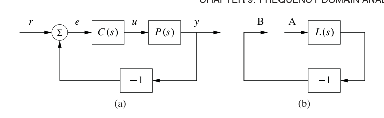
例 9.1 运算放大器电路
考虑图 9.2a 中的运算放大器电路，其中 \(Z_1\) 和 \(Z_2\) 是反馈元件从电压到电流的传递函数。系统中存在反馈，因为电压 \(v_2\) 通过描述运算放大器动态的传递函数 \(-G\) 与电压 \(v\) 相关，而电压 \(v\) 又通过传递函数 \(Z_1/(Z_1+Z_2)\) 与电压 \(v_2\) 相关。因此环路传递函数为
假设电流 \(I\) 为零，则元件 \(Z_1\) 和 \(Z_2\) 中的电流相同，因此
解出 \(v\) 得到
由于 \(v_2=-Gv\)，电路的输入输出关系为
图 9.2b 给出了对应框图。由式 (9.1) 可知，运算放大器电路振荡的条件是
奈奎斯特稳定性分析中一个强有力的观念是，可以通过环路传递函数的性质研究反馈系统的稳定性。这么做的好处在于，我们很容易看出应该怎样选择控制器，从而得到想要的环路传递函数。例如，如果改变控制器增益，环路传递函数就会按比例缩放。因此，稳定不稳定系统的一种简单方法，是降低增益，使曲线避开 \(-1\) 点。另一种方法是引入合适的控制器，使环路传递函数绕开临界点。下一节会看到这种思想。通过这种方式整形环路传递函数的方法称为环路整形，第 11 章会更系统地讨论。
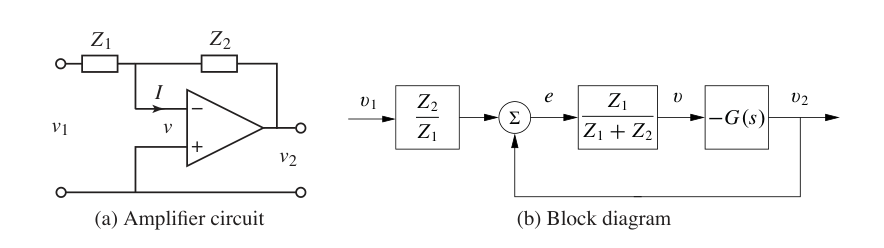
9.2 奈奎斯特判据
本节介绍奈奎斯特判据。它通过分析环路传递函数来判断反馈系统的稳定性。我们先引入一个方便的图形工具，即奈奎斯特图，然后说明怎样用它判定稳定性。
奈奎斯特图
上一章已经看到，线性系统的动态可以用频率响应表示，并通过 伯德图画出。为了研究系统稳定性，我们将使用频率响应的另一种表示，称为奈奎斯特图。环路传递函数 \(L(s)\) 的奈奎斯特图，是令 \(s\) 沿奈奎斯特 D 围道运动后，由 \(L(s)\) 在复平面中的像形成的曲线。D 围道由虚轴与无穷远处连接虚轴两端的圆弧组成，记为 \(\Gamma_D\)，如图 9.3a 所示。当 \(s\) 沿 \(\Gamma_D\) 运动时，\(L(s)\) 的像在复平面中给出一条闭合曲线，称为 \(L(s)\) 的奈奎斯特图，如图 9.3b 所示。注意，如果传递函数 \(L(s)\) 在 \(s\) 变大时趋于零，这也是通常情况，那么围道中位于无穷远处的部分会映射到原点。此外，与 \(\omega<0\) 对应的部分，是 \(\omega>0\) 部分的镜像。
当环路传递函数在虚轴上有极点时，奈奎斯特图有一个细节需要处理，因为这些极点处增益无穷大。为了解决这个问题，我们修改围道 \(\Gamma_D\)，在虚轴极点附近向右半平面绕开一小段半圆，如图 9.3a 中原点处极点所示。
式 (9.1) 给出的振荡条件意味着，环路传递函数的奈奎斯特图穿过 \(L=-1\) 点。这个点称为临界点。令 \(\omega_c\) 表示满足 \(\arg L(i\omega_c)=180^\circ\) 的频率，也就是奈奎斯特曲线穿过负实轴的位置。直觉上，如果 \(|L(i\omega_c)|<1\)，系统应该稳定；这意味着临界点 \(-1\) 位于奈奎斯特曲线左侧，如图 9.3b 所示。此时 B 点信号的幅值小于注入信号。这个直觉基本正确，但其中有若干细节需要严格数学分析才能说清。我们暂时推迟这些细节，先给出 \(L(s)\) 为稳定传递函数时的特殊情形。
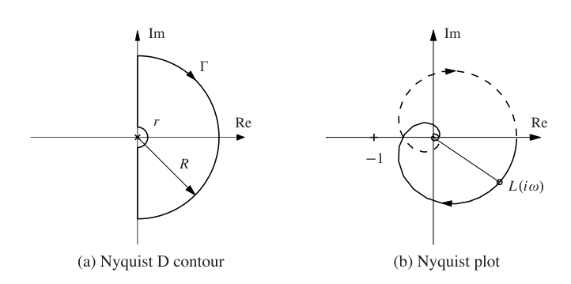
定理 9.1 简化奈奎斯特判据。 令 \(L(s)\) 为负反馈系统的环路传递函数，如图 9.1a 所示。假设 \(L\) 在闭右半平面 \(\operatorname{Re}s\ge 0\) 内没有极点，除了虚轴上允许存在单极点。则闭环系统稳定，当且仅当由
给出的闭合曲线对临界点 \(s=-1\) 没有净环绕。
可以用下面的直观步骤判断是否没有环绕。把一根垂直于平面的针固定在临界点 \(s=-1\) 上，把一条线的一端固定在临界点，另一端放在奈奎斯特图上。让连在奈奎斯特曲线上的线端沿整条曲线走一圈。如果曲线走完以后线没有绕在针上，就没有净环绕。
例 9.2 三阶系统
考虑三阶传递函数
为了计算奈奎斯特图，先在虚轴上取 \(s=i\omega\)，得到
把它画在复平面中得到图 9.4，其中 \(\omega>0\) 的点画成实线，\(\omega<0\) 的点画成虚线。可以看到两条曲线互为镜像。
为了完成奈奎斯特图，还要计算 \(s\) 位于奈奎斯特 D 围道外圆弧上时的 \(L(s)\)。外圆弧可写作 \(s=Re^{i\theta}\)，令 \(R\to\infty\)，得到
因此，D 围道的外圆弧在奈奎斯特图中映射到原点。
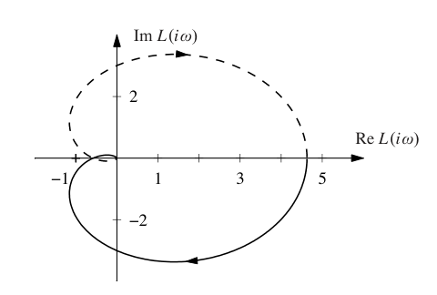
除了显式计算奈奎斯特图，也可以从频率响应，也就是 伯德图，推得奈奎斯特图。先从 \(\omega=0\) 到 \(\omega=\infty\) 画出 \(G(i\omega)\)，这可以由传递函数的幅值和相位读出。再画出 \(G(Re^{i\theta})\)，其中 \(\theta\in[-\pi/2,\pi/2]\) 且 \(R\to\infty\)，这部分几乎总是映射到零。剩余部分由已画曲线的镜像给出，通常用虚线表示。最后，在图上标出箭头，表示沿 D 围道顺时针运动的方向，也就是第一段曲线的绘制方向。
例 9.3 带原点极点的三阶系统
考虑传递函数
其中标称增益为 \(k=1\)。伯德图见图 9.5a。系统在 \(s=0\) 有一个单极点，在 \(s=-1\) 有一个双重极点。因此，伯德图的增益曲线在低频时斜率为 \(-1\)，在双重极点 \(s=1\) 处斜率变为 \(-3\)。当 \(s\) 很小时有 \(L\approx k/s\)，这意味着低频渐近线在 \(\omega=k\) 处与单位增益线相交。相位曲线在低频时从 \(-90^\circ\) 开始，在断点 \(\omega=1\) 处为 \(-180^\circ\)，高频时趋近 \(-270^\circ\)。
得到 伯德图以后，可以画出图 9.5b 中的奈奎斯特图。低频时曲线从相位 \(-90^\circ\) 开始，在断点 \(\omega=1\) 处穿过负实轴，此时 \(L(i)=-0.5\)，高频时沿虚轴趋于零。围道 \(\Gamma_D\) 在原点附近的小半圆，映射为一个包围右半平面的大圆。奈奎斯特曲线没有环绕临界点，因此由简化奈奎斯特定理可知闭环稳定。由于 \(L(i)=-k/2\)，可知当增益增加到 \(k=2\) 或更大时，系统会变成不稳定。
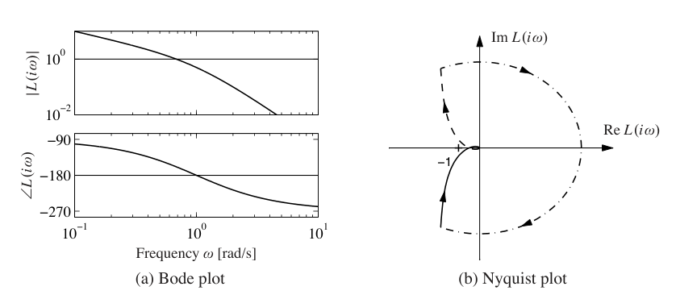
奈奎斯特判据并不要求对所有负实轴交点 \(\omega_c\) 都有 \(|L(i\omega_c)|<1\)。它要求的是净环绕数为零，因此允许奈奎斯特曲线在幅值大于 1 时穿过负实轴，只要之后再穿回来即可。本章开头引文中提到，早期反馈放大器设计者正是因为发现可以使用很高的反馈增益而感到惊讶。
奈奎斯特判据的一个优点是，它能显示控制器参数变化怎样影响系统。例如，当增益改变时，奈奎斯特曲线只是按比例缩放，因此这种影响很容易想象出来。
例 9.4 拥塞控制
考虑第 3.4 节描述的互联网拥塞控制系统。假设有 \(N\) 个相同源，以及一个表示外部数据源的扰动 \(d\)，如图 9.6a 所示。令 \(w\) 表示每个源的窗口大小，\(q\) 表示端到端丢包概率，\(b\) 表示路由器缓冲区中的包数，\(p\) 表示路由器丢弃一个包的概率。我们用 \(Nw\) 表示所有 \(N\) 个源接收的数据包总数。系统中还包括路由器与发送端之间的时滞，用来表示发送端和接收端之间的传输延迟。
为了分析系统稳定性，使用习题 8.12 中计算的传递函数：
其中 \((w_e,b_e)\) 是系统平衡点，\(N\) 是源的数量，\(\tau_e\) 是稳态往返时间，\(\tau_f\) 是前向传播时间。我们用 \(\tilde G_{b,Nw}\) 表示去掉前向时滞后的传递函数，因为这个时滞在图 9.6a 中作为单独模块表示。类似地，\(G_{wq}=G_{Nw,q}/N\)，因为乘子 \(N\) 也被单独抽出来作为一个模块。
环路传递函数为
由式 (3.22) 中的
可得
这里选择了 \(L(s)\) 的符号，使它与图 9.1b 中的符号约定一致。表示时滞的指数项会在 \(\omega=1/\tau_e\) 以上带来显著相位，交越频率处的增益将决定稳定性。
为了检查稳定性，要求交越处的增益足够小。若假设由队列动态带来的极点足够快，使 TCP 动态占主导，则交越频率 \(\omega_c\) 处的增益为
由奈奎斯特判据可知，如果这个量大于 1，闭环系统会不稳定。特别地，当时滞固定时，链路容量 \(c\) 增大后系统会变得不稳定。这说明 TCP 协议可能无法很好扩展到高容量网络，Low 等人 [137] 曾指出这一点。习题 9.7 给出了一些可能的改进思路。
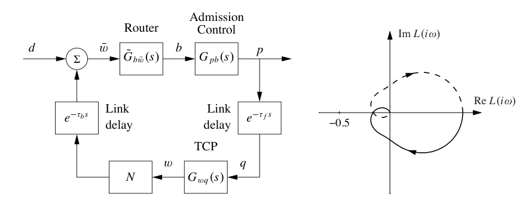
条件稳定
通常我们会发现，只要降低环路增益，不稳定系统就可以稳定下来。然而，在某些情况下，增加增益反而能使系统稳定。电气工程师在设计反馈放大器时首先遇到了这种现象，并称之为条件稳定。这个问题实际上也是奈奎斯特发展其理论的重要动机。下面用一个例子说明。
例 9.5 三阶系统
考虑环路传递函数为
图 9.7 给出了该环路传递函数的奈奎斯特图。注意，奈奎斯特曲线两次穿过负实轴。第一次交点发生在 \(\omega=2\)，此时 \(L=-12\)；第二次发生在 \(\omega=3\)，此时 \(L=-4.5\)。在这个例子中，基于图 9.1b 中信号沿回路传播的直觉论证会产生很强的误导。如果在 A 点注入频率为 2 rad/s、幅值为 1 的正弦信号，那么稳态下 B 点出现的振荡与输入同相，并且幅值为 12。凭直觉看，闭合回路似乎很难得到稳定系统。然而，由奈奎斯特稳定性判据可知，系统是稳定的，因为对临界点没有净环绕。还要注意，如果降低增益，反而可能产生环绕，这意味着系统必须有足够大的增益才能稳定。
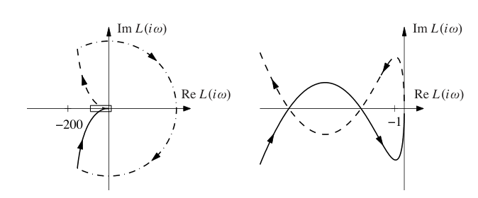
一般奈奎斯特判据
定理 9.1 要求 \(L(s)\) 在闭右半平面没有极点。在一些情形中这个条件并不成立，因此需要更一般的结果。奈奎斯特最初考虑的正是一般情形，下面把它写成定理。
定理 9.2 奈奎斯特稳定性定理。 考虑一个闭环系统，其环路传递函数为 \(L(s)\)。设 \(L(s)\) 在奈奎斯特围道包围的区域内有 \(P\) 个极点。令 \(N\) 为当 \(s\) 按顺时针方向绕奈奎斯特围道 \(\Gamma_D\) 一周时，\(L(s)\) 对 \(-1\) 的净顺时针环绕数。则闭环系统在右半平面内有
个极点。
完整的奈奎斯特判据说明，如果 \(L(s)\) 在右半平面有 \(P\) 个极点，那么 \(L(s)\) 的奈奎斯特曲线应该对 \(-1\) 有 \(P\) 次逆时针环绕，使 \(N=-P\)。特别地，这要求在某些对应负实轴交点的频率 \(\omega_c\) 上有 \(|L(i\omega_c)|>1\)。计算环绕方向时必须小心。奈奎斯特围道要按顺时针方向走，也就是说 \(\omega\) 从 \(-\infty\) 增加到 \(+\infty\)。如果奈奎斯特曲线顺时针绕行，则 \(N\) 为正；如果曲线逆时针绕行，则 \(N\) 为负，这正是 \(P\ne 0\) 时我们希望看到的情况。
与简化奈奎斯特判据一样，对于虚轴上的极点，我们使用半径为 \(r\) 的小半圆绕开。令 \(r\to 0\)，即可使用定理 9.2 推断稳定性。注意，小半圆的像会生成奈奎斯特曲线中幅值趋于无穷大的部分，因此计算绕数时必须谨慎。在计算机上画奈奎斯特曲线时，要确保这类极点被正确处理；很多时候还需要手工草绘奈奎斯特图的这些部分，并仔细确认绕过极点的方向。
例 9.6 稳定化的倒立摆
归一化倒立摆的线性化动态可用传递函数
表示，其中输入为支点加速度，输出为摆角 \(\theta\)，如图 9.8 所示，见习题 8.3。我们尝试使用比例微分控制器稳定摆，其传递函数为
于是环路传递函数为
图 9.8b 给出了环路传递函数的奈奎斯特图。可以看到 \(L(0)=-k\)，并且 \(L(\infty)=0\)。如果 \(k>1\)，当奈奎斯特围道按顺时针方向绕行时，奈奎斯特曲线对临界点 \(s=-1\) 有一次逆时针环绕，因此环绕数为 \(N=-1\)。由于环路传递函数在右半平面有一个极点，即 \(P=1\)，所以 \(Z=N+P=0\)，系统在 \(k>1\) 时稳定。如果 \(k<1\)，没有环绕，闭环系统会有一个右半平面极点。
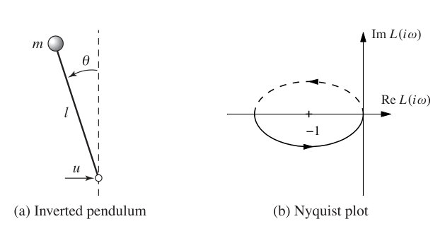
奈奎斯特稳定性定理的推导
现在证明适用于一般环路传递函数 \(L(s)\) 的奈奎斯特稳定性定理。证明需要复变函数理论中的一些结果，读者可参考 Ahlfors [6]。由于正确陈述奈奎斯特判据需要一定精确性，本节采用更偏数学的表述。我们也遵循数学中的约定，在本节余下部分用逆时针方向计数环绕。关键结果是下面关于复变量函数的定理。
定理 9.3 辐角变化原理。 令 \(D\) 为复平面中的闭区域，\(\Gamma\) 为该区域的边界。假设函数 \(f:\mathbb C\to\mathbb C\) 在 \(D\) 内和 \(\Gamma\) 上解析，除了有限多个极点和零点。则绕数 \(w_n\) 为
其中 \(\Delta_\Gamma\) 表示当 \(z\) 按逆时针方向沿围道 \(\Gamma\) 运动时角度的净变化，\(Z\) 是 \(D\) 中零点的数量，\(P\) 是 \(D\) 中极点的数量。重数为 \(m\) 的极点和零点都按 \(m\) 次计数。
证明：假设 \(z=a\) 是一个重数为 \(m\) 的零点。在 \(z=a\) 的邻域中有
其中 \(g\) 解析且不为零。因此
第二项在 \(z=a\) 处解析，所以 \(f'/f\) 在 \(z=a\) 处有一个单极点，留数为 \(m\)。函数零点处留数之和为 \(Z\)。类似地，极点处留数之和为 \(-P\)，因此
其中 \(\Delta_\Gamma\) 仍表示沿围道 \(\Gamma\) 的变化。又因为
而 \(|f(z)|\) 沿闭合围道一周后的变化为零，所以
定理得证。
这个定理可以用来确定复变量函数在给定区域中的极点数与零点数。只要选择合适的闭区域 \(D\) 及其边界 \(\Gamma\)，就能通过计算绕数得到极点数与零点数之差。
定理 9.3 可用于证明奈奎斯特稳定性定理。为此，选择 \(\Gamma\) 为图 9.3a 中包围右半平面的奈奎斯特围道。构造围道时，先取虚轴的一段 \(-iR\le s\le iR\)，再取右侧半径为 \(R\) 的半圆。如果函数 \(f\) 在虚轴上有极点，就像图中那样，在极点右侧用半径为 \(r\) 的小半圆绕开。令 \(R\to\infty\)、\(r\to0\)，即可得到奈奎斯特围道。注意，这里的 \(\Gamma\) 方向与图 9.3a 所示相反。工程中的约定是按顺时针方向遍历奈奎斯特围道，因为这对应着沿虚轴向上移动，便于从 伯德图草绘奈奎斯特图。
为了说明如何用辐角变化原理计算稳定性，考虑环路传递函数为 \(L(s)\) 的闭环系统。系统闭环极点是函数
的零点。为了求右半平面内零点的数量，令 \(s\) 沿奈奎斯特围道 \(\Gamma\) 逆时针运动，并考察 \(f(s)=1+L(s)\) 的绕数。这个绕数可以方便地从奈奎斯特图中确定。直接应用定理 9.3 即可得到奈奎斯特判据，只是要小心方向约定。由于 \(1+L(s)\) 的像只是 \(L(s)\) 的像平移了 1，我们通常把奈奎斯特判据表述为 \(L(s)\) 的像对 \(-1\) 点的净环绕。
9.3 稳定裕度
在实际应用中，系统稳定还不够。系统还必须有一定的稳定余量，以描述它到底有多稳定，以及它对扰动有多鲁棒。表达这种想法的方法很多，其中最常用的是受奈奎斯特稳定性判据启发而来的增益裕度和相位裕度。关键思想是，环路传递函数 \(L(s)\) 很容易画出。控制器增益增加时，奈奎斯特图会沿径向放大；控制器相位增加时，奈奎斯特图会发生旋转。因此，从奈奎斯特图上可以直接读出在系统失稳之前还可以增加多少增益或相位。
形式上，系统的增益裕度 \(g_m\) 定义为闭环系统失稳前开环增益所能增加的最小倍数。对于相位随频率单调下降且从 \(0^\circ\) 开始的系统，增益裕度可以根据环路传递函数 \(L(s)\) 相位第一次达到 \(-180^\circ\) 的频率计算。令这个频率为 \(\omega_{pc}\)，称为相位交越频率。系统的增益裕度为
类似地，相位裕度是达到稳定边界所需增加的相位滞后量。令 \(\omega_{gc}\) 为增益交越频率，也就是环路传递函数 \(L(s)\) 幅值第一次等于 1 的频率。对于增益单调下降的系统，相位裕度为
这些裕度在环路传递函数的奈奎斯特图上有简单几何解释，如图 9.9a 所示，图中只画出 \(\omega>0\) 对应的曲线部分。增益裕度由负实轴上 \(-1\) 与 0 之间最近交点到原点距离的倒数给出。相位裕度由单位圆上 \(-1\) 与环路传递函数之间的最小角度给出。当增益或相位单调变化时，这个几何解释与上面的公式一致。
增益裕度和相位裕度的一个缺点是，必须同时给出二者，才能保证奈奎斯特曲线不靠近临界点。另一种表达裕度的方法，是用一个单独的数，即稳定裕度 \(s_m\)。它定义为奈奎斯特曲线到临界点的最短距离。这个量与扰动衰减有关，第 11.3 节会讨论。
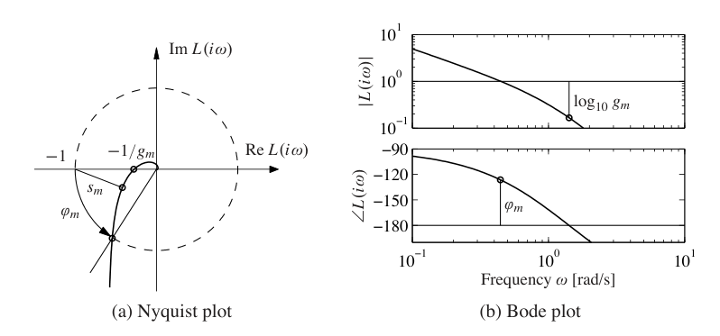
对许多系统而言，增益裕度和相位裕度可以从环路传递函数的伯德图中确定。求增益裕度时，先找到相位交越频率 \(\omega_{pc}\)，即相位为 \(-180^\circ\) 的频率。增益裕度是该频率处增益的倒数。求相位裕度时，先找到增益交越频率 \(\omega_{gc}\)，也就是环路传递函数增益为 1 的频率。相位裕度是该频率处环路传递函数的相位加上 \(180^\circ\)。图 9.9b 说明了怎样从环路传递函数的伯德图中读出这些裕度。注意，如果增益等于 1 或相位等于 \(-180^\circ\) 的频率不止一个，那么从 伯德图解释增益裕度和相位裕度可能会出错。
例 9.7 三阶系统
考虑环路传递函数 \(L(s)=3/(s+1)^3\)。图 9.10 给出了奈奎斯特图和 伯德图。利用图 9.10 中的奈奎斯特图可以计算增益裕度、相位裕度和稳定裕度，得到
增益裕度和相位裕度也可以从 伯德图中确定。
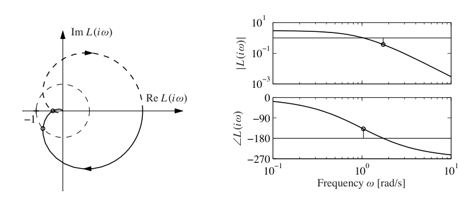
增益裕度和相位裕度是经典鲁棒性指标，在控制系统设计中已经使用很久。如果奈奎斯特曲线只与负实轴相交一次，增益裕度定义良好。类似地，如果奈奎斯特曲线只在一个点与单位圆相交，相位裕度定义良好。第 12 章会引入更一般的鲁棒性指标。
即使增益裕度和相位裕度都看起来合理，系统也未必鲁棒。下面的例子说明了这一点。
例 9.8 增益和相位裕度良好但稳定裕度很差
考虑环路传递函数
数值计算得到增益裕度 \(g_m=266\)，相位裕度为 \(70^\circ\)。这些数值似乎表明系统很鲁棒，但图 9.11 显示，奈奎斯特曲线仍然靠近临界点。稳定裕度只有 \(s_m=0.27\)，非常低。闭环系统有两个共振模态，一个阻尼比为 \(\zeta=0.81\)，另一个阻尼比为 \(\zeta=0.014\)。系统阶跃响应高度振荡，如图 9.11c 所示。
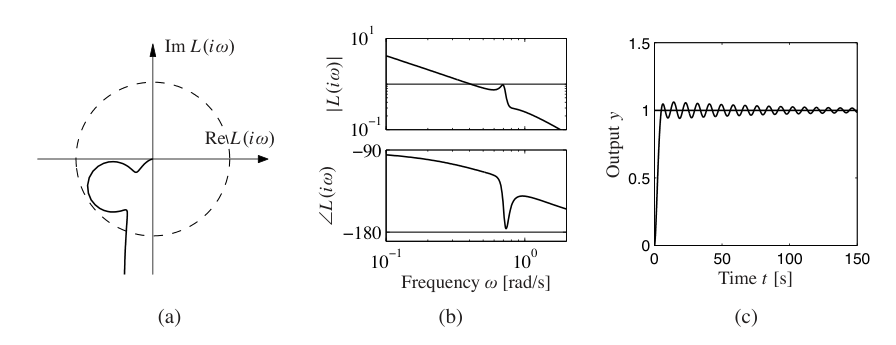
稳定裕度不容易从环路传递函数的伯德图中看出。不过还有其他 伯德图可以给出 \(s_m\)，第 12 章会讨论。一般来说，检查稳定性最好使用奈奎斯特图，因为它比 伯德图提供的信息更完整。
设计反馈系统时，常常用增益裕度、相位裕度和稳定裕度描述系统鲁棒性。这些数字说明系统偏离标称模型多少以后仍能保持稳定。比较合理的取值范围通常是：相位裕度 \(\phi_m=30^\circ\sim60^\circ\)，增益裕度 \(g_m=2\sim5\)，稳定裕度 \(s_m=0.5\sim0.8\)。
还有其他稳定性指标，例如时滞裕度，也就是使系统失稳所需的最小时滞。对于环路传递函数快速衰减的系统，时滞裕度与相位裕度关系密切；但如果环路传递函数的增益曲线在高频处有多个峰值，时滞裕度会是更合适的指标。
例 9.9 原子力显微镜的纳米定位系统
考虑原子力显微镜中样品水平定位系统。该系统具有振荡动态，一个简单模型是低阻尼弹簧质量系统。归一化传递函数为
其中阻尼比通常很小，例如 \(\zeta=0.1\) 或更小。
先从只有积分作用的控制器开始。所得环路传递函数为
其中 \(k_i\) 为控制器增益。图 9.12 给出了环路传递函数的奈奎斯特图和 伯德图。注意，靠近临界点 \(-1\) 的奈奎斯特曲线部分近似为圆形。
从图 9.12b 的伯德图可以看到，相位交越频率为 \(\omega_{pc}=\omega_0\)，它与增益 \(k_i\) 无关。在这个频率处计算环路传递函数，有
因此增益裕度为
若希望得到给定增益裕度 \(g_m\)，积分增益应选为
图 9.12 显示了一个增益裕度约为 \(g_m=1.67\)、稳定裕度约为 \(s_m=0.597\) 的系统。伯德图中的低频增益曲线几乎是一条直线，在 \(\omega=\omega_0\) 处有共振峰。增益交越频率近似等于 \(k_i\)。相位从 \(-90^\circ\) 单调下降到 \(-270^\circ\)，并在 \(\omega=\omega_0\) 处等于 \(-180^\circ\)。改变 \(k_i\) 会让增益曲线整体上下移动：增加 \(k_i\) 会把增益曲线上移，并提高增益交越频率。由于共振峰处相位为 \(-180^\circ\)，必须保证这个峰不要碰到 \(|L(i\omega)|=1\) 这条线。
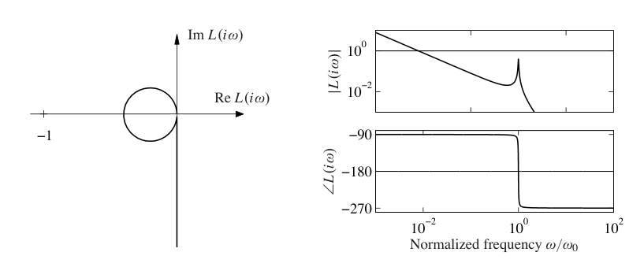
9.4 伯德关系与最小相位系统
观察 伯德图会发现，增益曲线和相位曲线之间似乎存在某种关系。以微分器和积分器的伯德图为例，见图 8.12。微分器的增益斜率为 \(+1\)，相位恒为 \(\pi/2\) 弧度。积分器的增益斜率为 \(-1\)，相位恒为 \(-\pi/2\)。对于一阶系统 \(G(s)=s+a\)，低频时幅值曲线斜率为 0，高频时斜率为 \(+1\)；相位在低频为 0，高频为 \(\pi/2\)。
伯德研究了没有右半平面极点和零点的系统中这两条曲线的关系。他发现，相位由增益曲线的形状唯一决定，反过来也成立：
其中 \(f\) 是权重核，
因此，相位曲线可以看作增益曲线导数的加权平均。如果增益曲线斜率恒为 \(n\)，那么相位曲线恒为 \(n\pi/2\)。
伯德关系 (9.8) 适用于右半平面没有极点和零点的系统。这类系统称为最小相位系统，因为含有右半平面极点和零点的系统会有更大的相位滞后。这个区分在实践中很重要，因为最小相位系统比相位滞后更大的系统更容易控制。下面给出几个非最小相位传递函数的例子。
时滞 \(\tau\) 的传递函数为
这个传递函数具有单位增益 \(|G(i\omega)|=1\)，相位为
具有单位增益的对应最小相位系统传递函数为 \(G(s)=1\)。因此，时滞带来额外相位滞后 \(\omega\tau\)。注意，相位滞后随频率线性增加。图 9.13a 给出了该传递函数的伯德图。由于横轴使用对数频率，相位曲线在图中呈现快速下降。
再考虑传递函数
它在 \(s=a\) 处有一个右半平面零点。该传递函数具有单位增益 \(|G(i\omega)|=1\)，相位为
具有单位增益的对应最小相位系统仍为 \(G(s)=1\)。图 9.13b 给出了该传递函数的伯德图。类似地，传递函数
在右半平面有一个极点，分析可得其相位为
伯德图见图 9.13c。
右半平面极点和零点会对可达到的性能造成严重限制。只要可能，就应该通过重新设计系统来避免这类动态。极点是系统固有性质，与传感器和执行器无关；零点则取决于系统输入和输出怎样与状态耦合。因此，可以通过移动传感器和执行器，或引入新的传感器和执行器来改变零点。
非最小相位系统在实践中并不少见。下面的例子从系统理论角度解释了一个常见经验：倒车比前进更难。同时，它也用极点和零点说明传递函数的一些性质。
例 9.10 车辆转向
简单车辆模型中，从转向角到横向速度的非归一化传递函数为
其中 \(v_0\) 是车辆速度，且 \(a,b>0\)，见例 5.12。传递函数有一个零点
正常前进时 \(v_0>0\)，这个零点位于左半平面；倒车时 \(v_0<0\)，它位于右半平面。单位阶跃响应为
因此横向速度会立即响应转向命令。倒车时 \(v_0\) 为负，初始响应朝着错误方向运动，这是非最小相位系统的代表性行为，称为反向响应。
图 9.14 显示前进和倒车时的阶跃响应。在这个仿真中，我们加入了一个时间常数为 \(T\) 的额外极点，以近似考虑转向系统中的动态。参数为 \(a=b=1\)、\(T=0.1\)，前进时 \(v_0=1\)，倒车时 \(v_0=-1\)。注意，当 \(t>t_0=a/|v_0|\) 时，其中 \(t_0\) 是车辆行驶距离 \(a\) 所需的时间，倒车的阶跃响应相当于前进响应加上时间延迟 \(t_0\)。零点 \(-v_0/a\) 的位置取决于传感器位置。上述计算假设传感器位于质心。如果传感器放在后轮位置，传递函数中的零点会消失。右半平面零点的困难可以通过一个思想实验直观看出：我们让汽车前进和倒车，并通过车底板上的一个小孔观察横向位置。
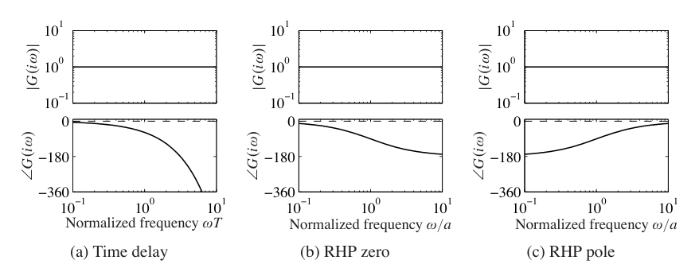
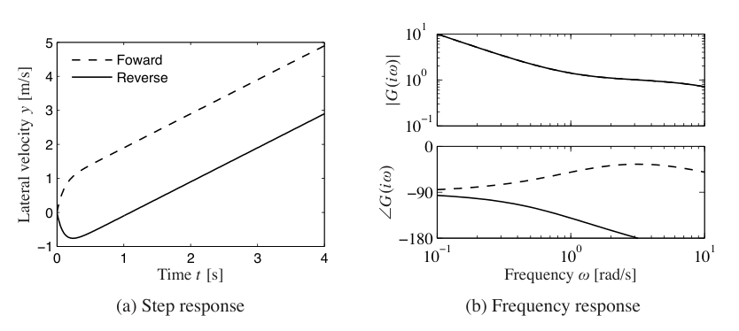
9.5 增益和相位的广义概念
频域分析的一个核心想法，是追踪正弦信号通过系统时的行为。传递函数表达的增益和相位概念很直观，因为它们描述了输入和输出之间的幅值关系与相位关系。本节说明如何把增益和相位扩展到更一般的系统，包括某些非线性系统。我们还会看到，当信号近似为正弦信号时，奈奎斯特稳定性判据也有相应的类似物。
系统增益
先考虑静态线性系统
其中 \(A\) 是一个元素为复数的矩阵，不要求为方阵。令输入和输出为复数向量，并使用欧几里得范数
输出范数满足
其中 \(^*\) 表示复共轭转置。矩阵 \(A^*A\) 对称且半正定，右端是一个二次型。矩阵 \(A^*A\) 的特征值平方根均为实数，并且
于是系统增益可以定义为所有可能输入下输出范数与输入范数之比的最大值：
矩阵 \(A^*A\) 的特征值平方根称为矩阵 \(A\) 的奇异值，最大奇异值记为 \(\bar\sigma(A)\)。
为了把这个概念推广到输入输出动态系统，需要把输入和输出看作信号向量，而不是实数向量。为简单起见，先考虑标量信号，令信号空间 \(L_2\) 为平方可积函数空间，其范数为
这个定义可以推广到向量信号，只需把绝对值替换成向量范数 (9.9)。现在可以形式化地定义系统增益。若系统接受输入 \(u\in L_2\)，并产生输出 \(y\in L_2\)，则
其中 \(\sup\) 表示上确界，也就是所有大于其参数的数中最小的一个。使用上确界的原因是，对 \(u\in L_2\) 而言，最大值未必存在。这个系统增益定义相当一般，甚至可以用于某些非线性系统，不过处理初始条件和全局非线性时需要谨慎。
在线性系统情形下，范数 (9.11) 有一些很好的性质。特别是，对于传递函数为 \(G(s)\) 的稳定单输入单输出线性系统，可以证明系统范数为
换句话说，系统增益对应频率响应的峰值。这与直觉一致：当输入频率位于系统共振频率附近时，输出最大。\(\|G\|_\infty\) 称为传递函数 \(G(s)\) 的无穷范数。
这个增益概念也可以推广到多输入多输出情形。对于具有实有理传递函数矩阵 \(G(s)\) 的线性多变量系统，可定义
这样，我们把矩阵增益的思想与线性系统增益的思想结合起来，也就是在所有频率上寻找最大奇异值。
小增益与无源性
对线性系统，奈奎斯特定理表明，如果环路传递函数在所有频率上的增益都小于 1，那么闭环稳定。这个结果可以使用式 (9.11) 定义的系统增益推广到更大的一类系统。
定理 9.4 小增益定理。 考虑图 9.15 所示闭环系统，其中 \(H_1\) 和 \(H_2\) 是稳定系统，信号空间定义恰当。令系统 \(H_1\) 和 \(H_2\) 的增益分别为 \(\gamma_1\) 和 \(\gamma_2\)。如果
则闭环系统输入输出稳定，并且闭环系统增益满足
如果 \(H_1\) 和 \(H_2\) 为线性系统，那么由奈奎斯特稳定性定理也能得到闭环稳定，因为 \(\gamma_1\gamma_2<1\) 时奈奎斯特曲线始终位于单位圆内。因此，小增益定理可以看作奈奎斯特稳定性定理的一种扩展。
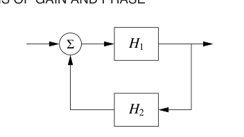
虽然前面主要讨论线性系统，小增益定理也适用于非线性输入输出系统。式 (9.11) 中的增益定义对非线性系统同样有效，只是在处理初始条件时要更加小心。
小增益定理的主要局限是，它不考虑回路中信号的相位，因此可能非常保守。为了定义相位概念，需要引入标量积。对平方可积函数，可以定义
两个信号之间的相位 \(\phi\) 可由
定义。若系统对所有输入而言，输入和输出之间的相位都不超过 \(90^\circ\)，则称该系统为无源系统。由奈奎斯特稳定性定理可知，如果线性闭环系统的环路传递函数相位保持在 \(-\pi\) 与 \(\pi\) 之间，则系统稳定。这个结果也可以推广到非线性系统，称为无源性定理，并且与小增益定理密切相关。更详细的讨论见 Khalil [123]。
小增益定理及其在鲁棒稳定性中的应用将在第 12 章继续讨论。
描述函数
对于图 9.16a 所示的特殊非线性系统，也就是一个线性系统与静态非线性环节构成的反馈连接，可以基于描述函数思想得到奈奎斯特稳定性判据的一种推广。沿着奈奎斯特稳定条件的思路，我们研究系统中能够维持振荡的条件。如果线性子系统具有低通特性，那么即使输入很不规则，它的输出也会近似为正弦信号。因此，可以考察与一次谐波对应的正弦信号怎样传播，从而得到振荡条件。
为了进行这种分析，需要研究正弦信号通过静态非线性系统时怎样变化。特别地，我们关心非线性输出的一次谐波与其正弦输入之间的关系。令 \(F\) 表示非线性函数，把 \(F(ae^{i\omega t})\) 按谐波展开：
其中 \(M_n(a)\) 和 \(\theta_n(a)\) 表示第 \(n\) 次谐波的增益和相位。由于 \(F\) 是非线性的，它们依赖于输入幅值。定义描述函数为一次谐波的复增益：
也可以假设输入为正弦信号，然后取所得输出傅里叶级数中的第一项来计算描述函数。
像推导奈奎斯特稳定性判据时一样，可以得到能够维持振荡的条件：
这意味着，如果在图 9.16 的 A 点注入一个正弦信号，同样的信号会在 B 点出现，于是连接这两点后就可以维持振荡。式 (9.15) 给出了求振荡频率 \(\omega\) 和振荡幅值 \(a\) 的两个条件：相位必须为 \(180^\circ\)，幅值必须为 1。求解这个方程的一种方便方法，是把 \(L(i\omega)\) 和 \(-1/N(a)\) 画在同一张图上，如图 9.16b 所示。这个图类似奈奎斯特图，只是临界点 \(-1\) 被曲线 \(-1/N(a)\) 替代，并且 \(a\) 从 0 变化到 \(\infty\)。
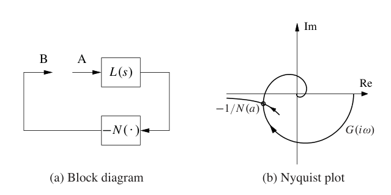
也可以为正弦以外的输入类型定义描述函数。描述函数分析是一种简单方法，但它是近似的，因为它假设高次谐波可以忽略。Atherton [20] 以及 Graham 和 McRuer [89] 的教材对描述函数技术有很好的介绍。
例 9.11 带滞环的继电器
考虑一个线性系统，其中非线性环节是带滞环的继电器。输出幅值为 \(b\)，当输入为 \(\pm c\) 时继电器切换，如图 9.17a 所示。假设输入为
当 \(a\le c\) 时输出为零；当 \(a>c\) 时，输出为幅值 \(b\) 的方波，并在
时刻切换。因此一次谐波为
当 \(a>c\) 时，描述函数及其倒数为
其中倒数表达式由简单计算得到。图 9.17b 显示继电器对正弦输入的响应，并用虚线显示输出的一次谐波。图 9.17c 演示了描述函数分析：虚线为传递函数
的奈奎斯特图，另一条曲线为 \(b=1\)、\(c=0.5\) 的滞环继电器的负倒数描述函数。两条曲线在 \(a=1\)、\(\omega=0.77\ \mathrm{rad/s}\) 处相交，这给出了过程和继电器组成反馈回路时可能振荡的幅值和频率。
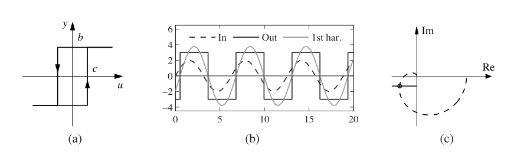
9.6 延伸阅读
奈奎斯特给出著名稳定性判据的原始论文发表于 1932 年的《贝尔系统技术期刊》[160]。更容易阅读的版本可见文献 [27]，其中还收录了控制领域早期的其他有趣论文。奈奎斯特的论文也被重印在 IEEE 关于控制奠基性论文的合集 [23] 中。奈奎斯特使用 \(+1\) 作为临界点，后来 伯德将其改为 \(-1\)，这已成为今天的标准记法。Black [36]、伯德 [41] 和 Bennett [29] 给出了早期发展的有趣视角。奈奎斯特基于他对正弦信号通过系统传播的洞察做了直接计算，并没有使用复函数理论中的结果。MacColl [140] 那本令人愉快的书中提出，可以用辐角变化原理给出一个简短证明。伯德在其著作 [40] 中大量使用复函数理论，奠定了频率响应分析的基础，并详细处理了最小相位概念。Ahlfors 的经典著作 [6] 是复函数理论的好来源。正如 James 等 [110]、Brown 和 Campbell [46] 以及 Oldenburger [163] 等早期教材所描述的那样，频率响应分析是控制理论兴起中的关键组成部分，并成为早期控制理论的基石之一。20 世纪 80 年代鲁棒控制兴起时，频率响应分析重新受到重视，第 12 章将讨论这一点。
习题
9.1 运算放大器。考虑 \(Z_1=Z_2\) 的运算放大器电路，它给出标称单位增益的闭环系统。令运算放大器的传递函数为
其中 \(a_1,a_2\gg a\)。证明振荡边界，并计算系统的增益裕度。提示：令 \(a=0\)。在图 9.2 的约定下，此时 \(L=G/2\)。
9.2 原子力显微镜。原子力显微镜轻敲模式的动态主要由悬臂振动的阻尼和对振动进行平均的系统决定。把悬臂建模为低阻尼弹簧质量系统，可以发现振动幅值按 \(\exp(-\zeta\omega_0 t)\) 衰减，其中 \(\zeta\) 是阻尼比，\(\omega_0\) 是悬臂的无阻尼固有频率。因此，悬臂动态可用传递函数
表示，其中 \(a=\zeta\omega_0\)。平均过程可用输入输出关系
建模，其中平均时间是振荡周期 \(2\pi/\omega_0\) 的 \(n\) 倍。在一阶近似中可以忽略压电扫描器的动态，因为它通常比 \(a\) 快得多。完整系统的一个简单模型为
画出系统的奈奎斯特曲线，并确定把系统带到稳定边界的比例控制器增益。
9.3 热传导。固体中热传导的一个简单模型由传递函数
给出。草绘系统的奈奎斯特图。确定过程相位为 \(-180^\circ\) 的频率，以及该频率处的增益。证明把系统带到稳定边界所需的增益为 \(k=e^\pi\)。
9.4 矢量推力飞机。考虑例 6.8 和例 7.5 中为矢量推力飞机设计的状态空间控制器。该控制器由两部分组成：一个根据输出计算系统状态的最优估计器，以及一个根据估计状态计算输入的状态反馈补偿器。计算该系统的环路传递函数，并确定闭环动态的增益裕度、相位裕度和稳定裕度。
9.5 车辆转向。考虑例 7.4 中讨论的基于状态反馈的车辆转向线性化模型。过程和控制器的传递函数为
如例 8.6 中所计算。令过程参数为 \(\gamma=0.5\)，并假设状态反馈增益为 \(k_1=1\)、\(k_2=0.914\)，观测器增益为 \(l_1=2.828\)、\(l_2=4\)。数值计算稳定裕度。
9.6 二阶系统的稳定裕度。一个动态由双积分器描述的过程由理想 PD 控制器控制，其传递函数为
其中增益为
计算并绘制增益裕度、相位裕度和稳定裕度随 \(\zeta\) 的变化。
9.7 过载条件下的拥塞控制。TCP 回路在过载条件下的一个强简化流模型由环路传递函数
给出，其中排队动态用积分器建模，TCP 窗口控制用时滞 \(\tau\) 表示，控制器只是比例控制器。一个主要困难是，系统运行过程中时滞可能显著变化。证明：如果可以测量时滞，就能够选择一个增益，使所有时滞 \(\tau\) 下的稳定裕度都满足 \(s_m\ge0.6\)。
9.8 伯德公式。考虑 伯德公式 (9.8)，它描述了一个所有奇点都在左半平面的传递函数中增益和相位之间的关系。画出权重函数，并判断近似
在哪些频率范围内有效。
9.9 时滞的 Padé 近似。考虑传递函数
证明在频率 \(\omega<10/\tau\) 的范围内，这两个传递函数的最小相位性质相似。因此，较长时滞等价于一个较小的右半平面零点。近似式 (9.16) 称为一阶 Padé 近似。
9.10 反向响应。考虑输入输出响应由
建模的系统，它在右半平面有一个零点。计算系统阶跃响应，并说明输出最初会朝错误方向运动，这也称为反向响应。把 \(s=1\) 处的零点替换为 \(s=-1\) 处的零点，与最小相位系统的响应进行比较。
9.11 描述函数分析。考虑下方左图所示框图系统。模块 \(R\) 是带滞环的继电器，其输入输出响应如右图所示，过程传递函数为
使用描述函数分析确定可能极限环的频率和幅值。仿真该系统，并与描述函数分析结果比较。